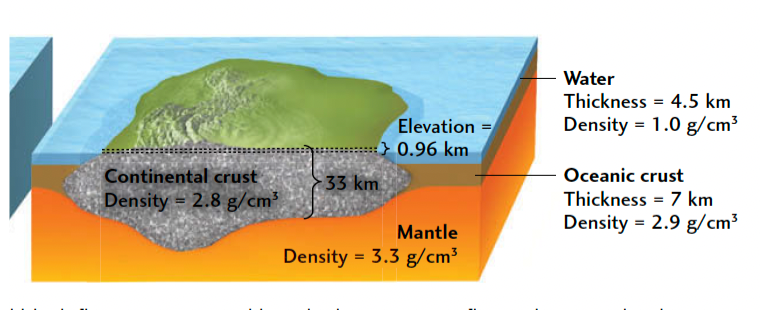
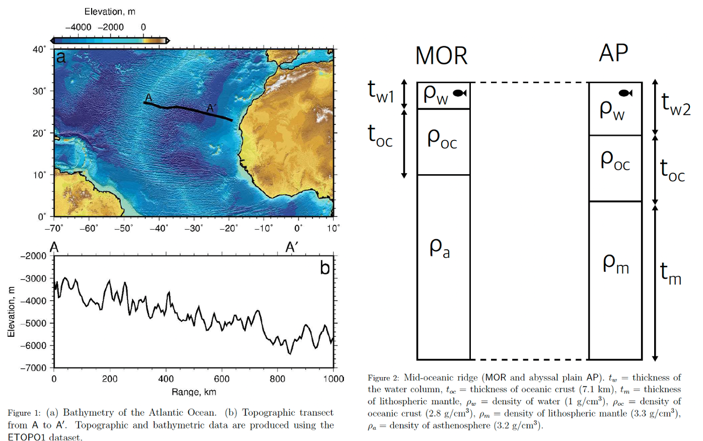

Isostasy
Contents
Isostasy#
The Principle of Isostasy#
Isostasy (from the Greek for“equal standing”) is based on Archimedes’ principle, which states that the weight of a floating solid is equal to the weight of the fluid it displaces.
According to legend, the Greek philosopher Archimedes discovered this principle over \(2200\) years ago while sitting in his bath; boggled by its implications, he rushed naked into the street, yelling “Eureka, I have found it!” Major discoveries rarely provoke such enthusiastic responses from modern scientists.
Lithospheric architecture: Isostasy#
Balance pressure, \({\rho}gh\), at base of columns.

If continental crust (\({\rho}_{c} = 2.8\,g\,cm^{-3}\)) floated alone on top of mantle material (\({\rho}_{m} = 3.3\,g\,cm^{-3}\)), we must account for the oceanic crust (\({\rho}_{o} = 2.9\,g\,cm^{-3}\)) and the ocean water (\({\rho}_{w} = 1.0\,g\,cm^{-3}\)) that also floaton the mantle. Since these two layers fill up the basins around the continents, we must subtract from the continental elevation the height \(h\) that each of those layers alone would float above the mantle, given by its buoyancy factor times its thickness. The isostatic equation for continents therefore has three terms, one positive and two negative:
Using thicknesses of \(33\,km\) and \(7\,km\) for continental and oceanic crust, respectively, and a water depth of \(4.5\,km\), we obtain:
This result is consistent with the overall distribution of Earth’s topography. Because of isostasy, elevation is a sensitive indicator of crustal thickness, so regions of lower elevation must have thinner crust (or higher average density), whereas regions of higher elevation, such as the Tibetan Plateau, must have thicker crust (or lower average density).
\({\rho}={\rho}_{0}(1-{\alpha}T)\), density also changes with temperature at a thermal expansion rate \({\alpha}\).
Practice 1#
By assuming that the mid-oceanic ridge and the abyssal plain are in isostatic equilibrium use Figures 1 and 2 to estimate the thickness of the lithosphere beneath the abyssal plain (at A′). Satisfy yourself that
Seismological and geochemical data indicate that the crust is \(7.1\,km\) thick at the ridge. It is reasonable to assume that the asthenosphere has a density of \(3.2\,g\,cm^{-3}\), the lithospheric mantle has a density of \(3.3\,g\,cm^{-3}\) and oceanic crust has a density of \(2.8\,g\,cm^{-3}\). Density of seawater is ∼ \(1.03\,g\,cm^{-3}\).

Solution 1#
From Figure 2:
By equating depth to compensation on each side:
Therefore:
# Set up parameters and work out t_m (measure water depths from Figure 1):
t_oc = 7100 # metres
rho_a = 3200 # kg per metre cubed
rho_m = 3300 # kg per metre cubed
rho_oc = 2800 # kg per metre cubed
rho_w = 1015 # kg per metre cubed (1000 for fresh water)
t_w1 = 2500 # metres
t_w2 = 6000 # metres
t_m = (t_w1*(rho_w - rho_a) + t_w2*(rho_a - rho_w)) / (rho_m - rho_a)
print(f'Thickness of lithospheric mantle = {t_m/1000.:.1f} km.')
Thickness of lithospheric mantle = 76.5 km.
# Work out t_l by considering thickness of crust:
t_l = t_oc + t_m
print(f'Total thickness of oceanic lithosphere in old abyssal plain = {t_l/1000.:.1f} km.')
Total thickness of oceanic lithosphere in old abyssal plain = 83.6 km.
Reference#
2019 notes and practical from Lecture 1 of the module ESE 60028 Continental Tectonics and textbook Understanding Earth (7th edition) pp.404-405.